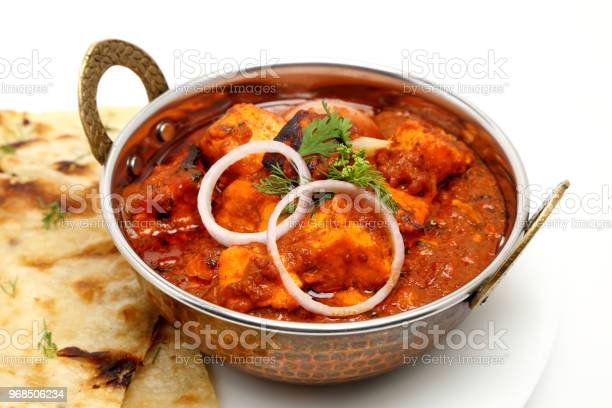

Home Page
Kadai Paneer (Restaurant Style)

Kadai paneer is a simple yet amazingly flavorful paneer dish made by cooking paneer and bell peppers
with fresh ground spices known as kadai masala. It is called as kadai paneer since it is cooked in a
special Indian wok called kadai, which is a basic kitchen essential of Indian Cuisine.
However the dish can be prepared without a kadai just like the way I cooked it in a regular pan.
How is kadai masala made?
Kadai masala is a unique blend of spices specially used to make kadai dishes.
It is much more flavourful and stronger than the regular garam masala that is used in regular
Indian cooking. Kadai masala is made with coriander seeds, red chilies, cloves, cardamoms, cinnamon & fennel seeds.
These whole spices are dry roasted to bring out the aroma and then ground to a slightly coarse powder.
Here coriander seeds are used in higher quantity than it is used for regular garam masala.
So if you do not have all of these spices, then the simple trick is to use coriander seeds, red chilies & garam masala.
Since most garam masala powders already have cinnamon, cloves, cardamoms and fennel seeds, sometimes I go
the easy way and use coriander seeds, red chilies & garam masala.
Instructions for making delicious Kadai Paneer
Kadai Masala
-
Prepare the following:
- Cube 1 heaped cup onions (to saute)
- Chop 1 cup tomatoes
- Cube 1 more onion (separate the layers)
- Cube half cup capsicum preferably the same size as of paneer
- Measure 2 cups cubed paneer (¾ inch, 230 to 250 grams)
-
To make kadai masala, add the following ingredients to a grinder jar:
- 2 tablespoons coriander seeds
- 3 to 4 deseeded red chilies (kashmiri)
- ¾ teaspoon fennel seeds
- 2 green cardamoms
- Pulse all of them to make a coarse or fine powder to suit your liking. Kadai masala is usually ground to a coarse powder. In this recipe, even the coarse ground spices get cooked well in the gravy. So you won’t get a bite of the spices even if it is made to a slightly coarse powder. Set this aside.
Make onion tomato masala
- Heat a pan with half tablespoon oil on a high flame. Saute 1 heaped cup of cubed onions along with 6 to 7 split cashews until they turn transparent or lightly golden.
- Add 1 cup chopped tomatoes and continue to saute on a medium heat until tomatoes turn mushy and soft. If needed add little salt or cover and cook to fasten the cooking.
- Cool this completely.
- Add the cooled onion tomatoes to a grinder jar.
- Blend it to smooth paste without adding water.
Make Kadai Paneer
- Add another half tablespoon of oil to the pan and heat up on a high flame. To get the restaurant style smoky flavor, use the same pan used for sauteing onion tomatoes earlier. Add capsicum and onions, saute on a high flame just until half cooked (must remain crunchy). Constantly toss to prevent burning.
- Add paneer. Make sure it is not too moist before you add. Toss it in the hot pan for 60 to 90 seconds on a medium heat. Less than 2 mins. Do not overcook else the paneer turns hard. Transfer all these to a plate.
- Add 1 tablespoon oil and heat it on a medium flame. Saute ginger & garlic paste until the raw smell goes away.
- Add the ground spices - kadai masala and saute it well on a medium to low heat. We have not roasted the spices earlier so we need to do it well here until it turns aromatic & the raw flavor goes away.
- Add onion tomato puree.
- Saute it well for about 2 mins. Add half tsp garam masala. I have added half tsp kashmiri red chilli powder just to bring a good color and this is optional.
- Next saute well for 2 mins again. Since we have sauteed onions and tomatoes well in the earlier steps, we don't need to cook the masala a lot.
Make Kadai Paneer Gravy
- Add ¾ cup water and mix well. Bring this to a boil. If needed pour another ¼ cup water.
- Cook until the gravy turns thick and flavorful. Make sure the gravy doesn't look runny at this satge. After boiling it well, you will see traces of oil on top of the gravy. Next towards the end add ¾ teaspoon crushed kasuri methi.
- Add the sauteed onion, capsicum and paneer that we had set aside. Turn off the stove.
- Mix well. Add ginger juliennes and chopped coriander leaves. Cover and set aside for 2 mins. Do not leave on the hot stove since it will continue to cook further. Transfer to a serving bowl.
- Allow kadai paneer to rest for at least 15 mins so the paneer to absorbs the flavors. You can also smoke the curry if you like following my dal makhani post.
- This delicious kadai paneer gravy goes very well with roti / chapathi, plain paratha, butter naan or plain basmati rice or flavored rice like jeera rice, ghee rice or Pulao.
Pro tips
- Kadai masala: The key to a good kadai paneer is in using the right combination of spices to make kadai masala. So use them as mentioned in the recipe. Substituting it with a regular or normal garam masala will give you a regular paneer curry. However it will still taste good but you won't find any kadai flavors in it.
- Dry roasting the whole spices before grinding is optional. But if you do not have a good grinder/blender then you may roast them to crisp up. I do not roast them as I keep all my spices in the fridge and they remain crisp.
- Dried red chilies are used in this recipe as they impart a smoky flavour to the dish. Using good quality dried red chilies that are not too spicy or pungent is very important. I usually use Kashmiri or byadgi red chilies. Otherwise the dish may turn very spicy with bitter tones. You can also reduce the amount of red chilies and use red chilli powder.
- Ginger: Adding ginger julienne towards the end of cooking infuses a great aroma to the dish. Do not skip this.
- Paneer: Using good quality fresh paneer makes a lot of difference to the dish. If you prefer to make your own paneer at home, you can follow this post on How to make paneer. If using store bought paneer then immerse it in slightly hot water for 15 mins. Drain completely and use it.
How to make best kadai paneer
Always saute the powdered kadai masala in oil until it turns fragrant.
This is the key to an aromatic kadai paneer. Smoky flavour: Kadai paneer served in some restaurants get
a mild smoky flavor as the bell peppers & onions are tossed on a high flame on large burners.
To get similar flavors toss the veggies on the highest flame as mentioned in the recipe.
This lends a mild smoky aroma to the dish.
Substitutions:
- You can use any store bought kadai masala.
- For a creamy version you can also use a few tablespoons of cream towards the end.
- You can easily substitute tofu for paneer in the recipe.
- If you do not eat onions and garlic, you may skip both of them completely. Without onions the dish will be on the tangy side. So to balance that you may need to add some cream at the last stage. Without onions, the quantity of the prepared kadai paneer will be lesser.
- For the gravy version, I have used cashews. You may substitute them with blanched almonds.
Home Page